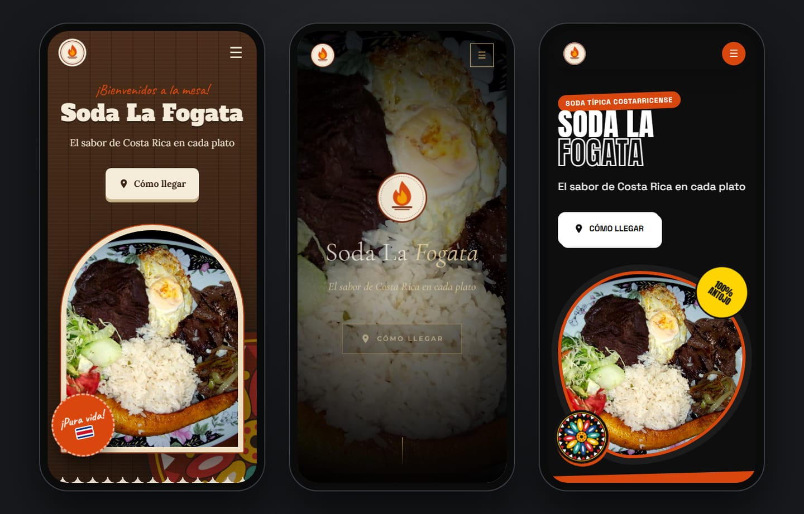
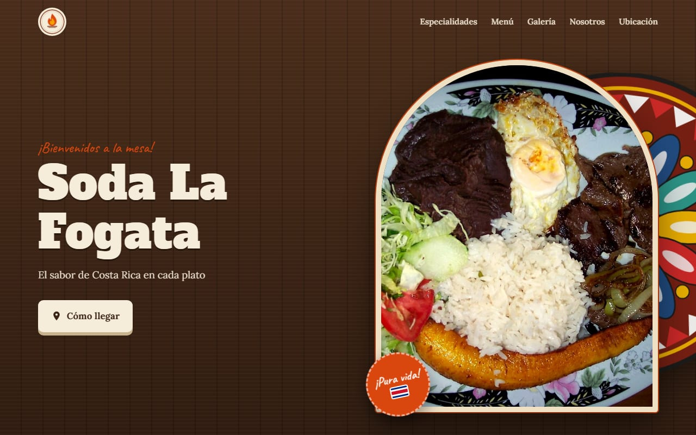
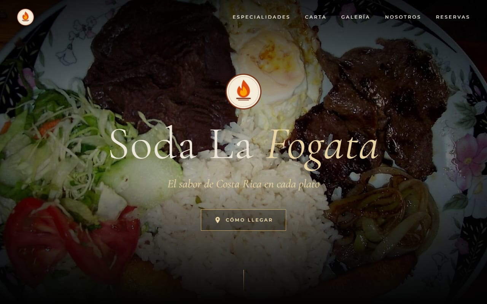
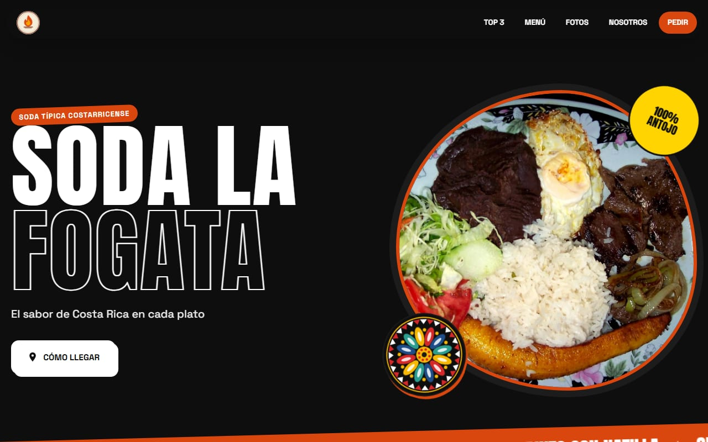
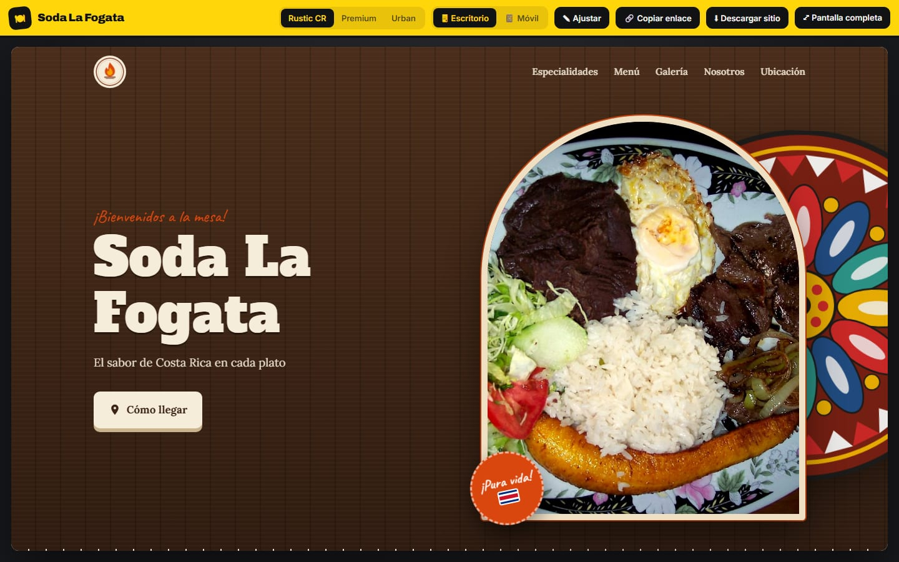

La web de tu restaurante, lista en minutos.
DemoChef genera demos web completas para restaurantes a partir de sus fotos, su menú y su logo: tres estilos distintos, toque costarricense y diseño pensado primero para el celular.
3 plantillasColores desde el logoRetoque de fotosMobile first100% gratis

Demo en vivo
"Soda La Fogata" es un restaurante ficticio, generado con DemoChef. La misma información, tres estilos:

Rustic CRSodas, comida típica, casados. Madera, mantel y carreta de Sarchí.
Abrir demo →
Abrir demo →

Premium DiningParrillas, marisquerías, gourmet. Negro, dorado y fotografía grande.
Abrir demo →
Abrir demo →

Urban FoodHamburguesas, pizzerías, food trucks. Tipografía gigante y energía.
Abrir demo →
Abrir demo →
Cómo funciona
Una herramienta interna para preparar propuestas comerciales en una sola visita.
01Datos y fotos
Nombre, logo, contacto, ubicación, menú y de 5 a 15 fotos del restaurante.
02Generación
Puntúa cada foto (nitidez, luz, color, encuadre), elige las 3 especialidades, retoca la comida y arma la web.
03Presentación
Cambia de plantilla en vivo, muestra la vista de celular y descarga el sitio listo para publicar.
